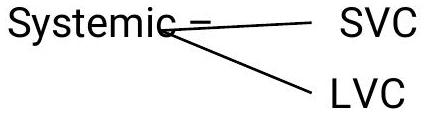

Shock & Coronary Artery Disease
NOTES UNDER CCF
Two group indicators of heart diseases ccf.
1. Hemodynamic indicators.
There is elevated nventricular and diastolic pressures Elerated systematic and pulmonary pressure and decreased cardiac output.
Pulmonary -Lungs.
2. Clinical indicators
Activated compensatory mechanism.
In sympathetic system, there is increased heart rte and breath sounds.
In kidneys-there is fluid retention and peripheral vasoconstriction.
- Stretching of cardiac muscles and dilatation to increase the cardiac volume.
- There is myocardial hypertrophy (enlargement)
- There is accumulation of extracellular fluid which leads to oedema and there is impaired organ perfusion.
SHOCK.
This is serious life threatening medical condition where insufficient blood flow reaches the body issues.
As the blood carries nutrients and oxygen around the body, reduced blood flow hinders the delivery of these components to the tissues and can support the tissues from functioning properly.
Stages of shock (ICPR)
1. Initial stage.
The hypoperfusional stage causes hypoxia leaching to the, mitochondria being unable to produce ATP and due to lack of oxygen the cell membrane becomes damaged and becomes leaky to extracellular fluid.
Celle will therefore perform anaerobic respiration therefore build up of lactic and phyric acid leading to systemic acidosis. The process of removing the compounds (lactic and pyruvic acid) by the liver requires oxygen which absent.
2. Compensatory stage.
This is characterized by the b0ody employing physiological mechanism including hormonal and biochemical mechanisms in an attempt to reverse the condition. As a result of acidosis there will be hyperventilation in order to get rid of the carbon dioxide. The boro-receptors in the arteries detect the hypotension thus adrehaline and noradrehaline which causes vasoconstriction on with a mild increase in heart rate resulting in an increase in BP antidiuretic hormone (ADH) or vasopressin is thefore released to conserve the fluid in the kidneys.
3. Progressive or decompensating stage.
Here the compasatory mechanisms begin to fail and because or decreased perfusion in cells, sodium ions build up within the cells while $\mathrm{K}^{+}$leaks out. as anaerobic metabolism continue increasing the body's metabolic acidosis, there will be increased hydrostatic pressure and combined with histamine release there will be leakage of fluid and proteins into the surrounding tissues. As this fluid is lost, the blood concentration and viscosity is going to increase.
4. Refractory or irreversible stage.
At this stage, the vital organs have failed and shock can no longer be reversed. Brain damage and cell death have occurred and death will occur imminently i.e. (death is unavoidable).
Types of shock
- Hyporolaemic shock
- Cardiac shock
- Distributive shock
- Septic shock
- Anaphylactic shock
- Neurogenic shock
- Obstructive shock.
1. Hyporolaemic shock.
This is the most common type of shock and it's based on insufficient circulatory volume.
Causes
- Bleeding (hemorrhage)
- Severe loss of fluid
- Severe burns.
2. Cardiogenic shock.
It's caused by the failure of the heart to pump effectively. It can be due to the damage of heart muscle most often from a myocardial infarction.
Other causes
- Arrhythmias
- CCF
- Cardiomyopathy i.e affects muscles of the heart e.g pericarditis and endocarditis.
- Cardiac valve problems.
3. Distributive shock
It is same as hyporoelemic shack but here thre is an insufficient intravascular volume of blood.
TYPE
(a) Septic shock
This is caused by an overwhelming infection leading to vasodilatation e.g gram negative bacteria e.g neiseria gonococci .E. coli,klebsiella.
The micro-organisms releases an endotoxin which causes adverse biochemical immunological and occasionally neurologically effects which are hamful to the body same appliy to the gram positive cocci also produce same exotoxins.
(b) Anaphylactic shock.
Cuased by severe analhylactic reaction to an allergen , antigen,drug or foreign protein causing the release of histamine which causes widespread vasodilation.
(c) Neurogenic shock.
It is the rarest form of shock. It is caused by trauma to the spinal cord resulting in sudden loss of autonomic and motor reflexes below the injury level.
4. Obstructive shock
Here the flow of blood is obstructed which impedes (prevents0 circulation and can result in circulatory arrest.
(1) Cardiac temponade
In which fluid in the pericardium prevents inflow of blood into the heart. i.e fluid in the pericardium causes pressure on the blood vessel.
(2). Constructive pericarditis.
This is whereby the pericardium shrinks and hardens thus prevents inflow of blood.
3. Tension pneumothorax.
Through increased intrathoracic Pulmonary pressure blood flow to the heart is prevented.
4. Pulmonary embolism.
An Emboli, thrombus prevents blood flow from lungs to the heart causing shock.
Signs and symptoms of hyporolamic shock.
- Anxiety
- Restlessness
- Altered mental state due to decreased cerebral perfusion and hypoxia.
- Hypotension because of decreased circulatory volume.
- A rapid weak thread pulse due to decreased flow of blood combined with tachycardia.
- Cool clumpsy skin due to vasoconstriction
- Rapid and shallow respiration due to stimulation of sympathetic nervous system because of acidosis.
- Hypothermia due to decreased perfusion and evaporation of sweat.
- Thirst and dry moth due toi fluid depletion.
- Cold and mottled skin (cutis mormorata) especially in extremities due to insufficient perfusion of the skin.
- Distracted look in the eyes or staring into space often with dilated pupil.
Cardiogenic shock.
Signs and symptoms.
Signs are similar to hyporolemic shock but in addition there is distended jugular vein due to increase jugular venous pressure.
There is also absent pulse due to tachy arrhythmias.
Obstructive shock.
Signs and symptoms.
- Also similar as hypovolemic shock
- Also there are distended jugular veins.
Distributive shock
Signs and symptoms.
Septic shock- its signs are similar with hyporalemic shock. But there is pyrexia or hyperthermia du to overwhelming bacterial infection.
Neurogenic s/s
Similar to hypovolemic shock expect in skin characteristics.
Anaphylactic shock
Signs and symptoms.
- There are skin eruptions
- Localized oedema especially around the face.
- Weak and rapid pulse
- Breathless and cough due to the narrowing of the airways.
Management of hyporolamic shock.
- A, B, C airway, breathing and circulation, resuscitation
- Hydrate (fluid and electrolytes conservation)
- Blood transfusion
- Inotropic agents' e.g. dopamine, increase force and pressure of the heartbeat.
- Treat the underlying shock.
Management of cardiogenic shock
- Fluid replacement
- Keep pt warm (use blankets)
- Antidiuretics
- Use of antishock trouser -they compress the legs and concentrate blood into vital organs
Management of Distributive shock.
Septic
- Use of strong parental antibiotics to treat the bacterial infection.
- Supportive care e.g. use of oxygen, re-assure.
Anaphylactic mx
- Put the pt in trendel burg position i.e. legs up and head lower than the limbs.
- Use of antidiuretics etc.
Obstructive shock mx
- Remove the obstruction first.
Pneumothorax and haemothorax
In these cases insert an underwater seal drainage.
Pulmonary emboli mx
- Thrombolitics drugs.
- Embolectomy
Cardiac temponade.
Is treated by draining fluid form the pericardial space by use of procedure called periocadiocentesis.
CORONARY ARTERY DISEASE.
- Also called coronary heart disease or coronary atheroschlerosis.
- It is the progressive narrowing of the artery that nourishes the heart muscles.
- Often they are no symptoms but if one or more arteries become severly narrowed Angina pectoris may develop during exercise, stress or other times when the heart muscle is not getting enough blood.
Cause
The narrowing is due to the build up of fatty pledge i.e. atheroschlerosis along the artery walls. These deposits are composed of cholestral and othe lipids.
Treatment
- Give beta - blocking drugs e.g. nitrates which act by blocking the effect of sympathetic nervous system on the heart thus slowing the heart rate.
- Give calcium channel blocker by reducing the amount of calcium that enters the muscles in the coronary artery walls spasms can be prevented.
- Surgery called angioplasty and coronary bypass i.e. removing and replacement of the clogged coromy artery.
- Note: To include the nursing care management of coronary heart disease.